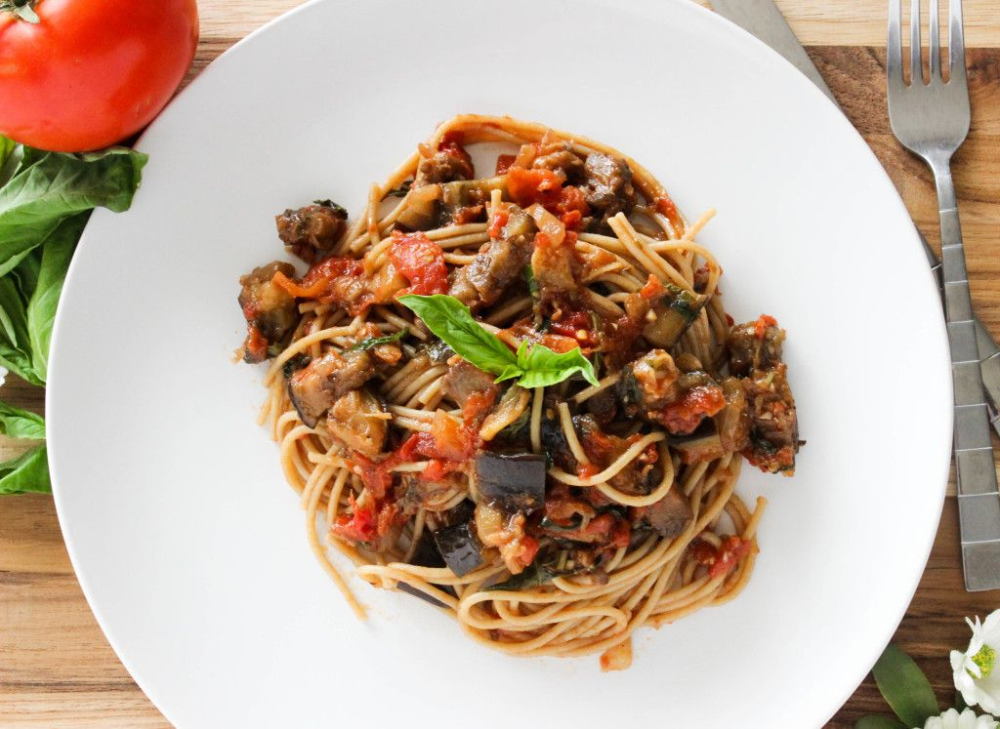

Pasta with eggplant and raisins(?)

Ingredients:
- 2 average-sized eggplants
- 500 grams of pasta - I suggest penne, but anything will do
- 1/4 cup of raisins
- a can of canned tomatoes
- 4 cloves of garlic, minced
- dried basil, thyme, oregano
- salt, pepper
- oil for frying
- (optional) basil leaves for garnish
The process:
- Cut the eggplant into small cubes. If you have the time you can generously sprinkle it with salt
and leave for about 30 minutes at this stage. It makes the frying process faster (rinse the salt off the eggplant
before frying).
- Heat up a pan with a generous amout of oil and fry the eggplant till it is soft and lightly brown.
- Beacause the frying is going to take a while, it is a good time to boil the pasta!
- Once the eggplant has reached the desired state - add tomatoes and herb, some salt. Add in half a
cup of pasta water too. Let it simmer under the lid for about 10-15 minutes
- Mix together with the cooked pasta. Plate. Garnish with fresh basil leaves for outstanding presentatio and taste.